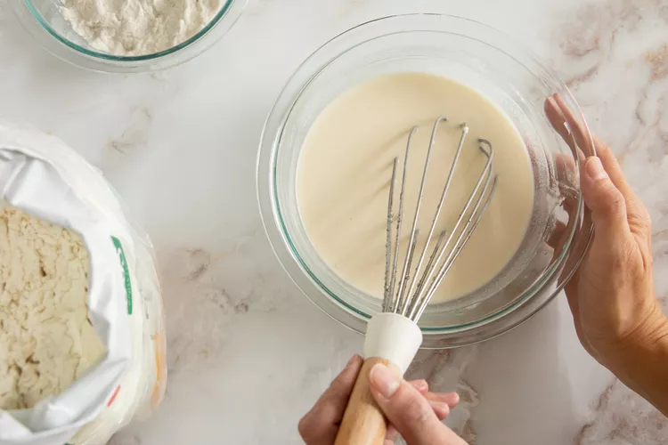
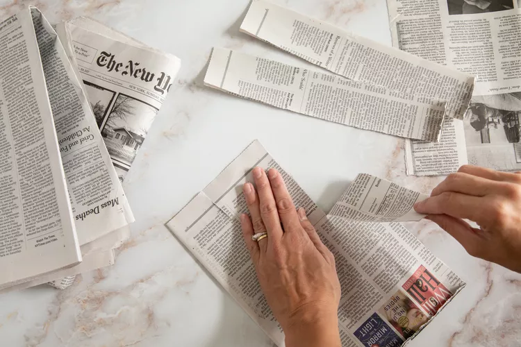
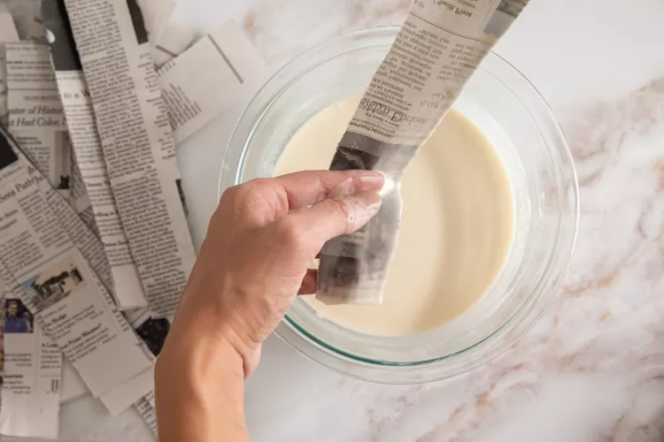
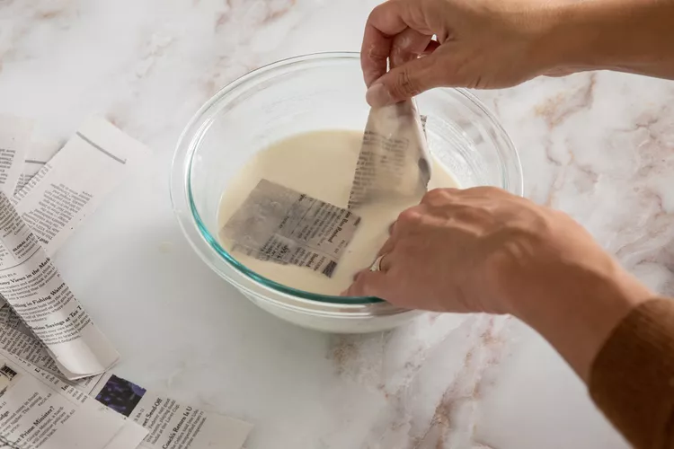
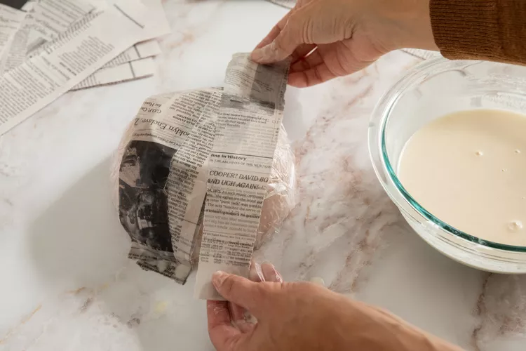
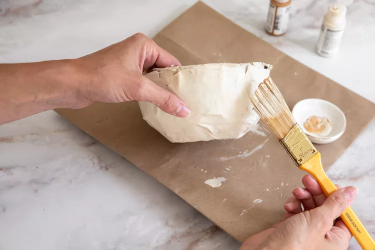

|  |
step 1 :
Prepare the Paste
Decide what type of paper mache paste works best for your project, then prepare it. You have three options for paste:
No-Cook Paste Recipe: This simple recipe requires only flour, water, a bowl, and a whisk.
Cooked Paste Recipe: Although this recipe is similar to the no-cook version, the paste is a little stronger and smoother.
Resin Paper Mache Paste Recipe: Resin will give your finished paper mache project a hard finish, making your finished projects more durable. |
|  |
step 2 :
Tear the Newspaper :-
Rip the newspaper into strips—do not cut it. Torn strips lay smoother on the form. The length of your strips may vary depending on the size of your project; however, you will want your strips to be about 1 to 2 inches wide.
. |
|  |
step 3 :
Dip the Newspaper :-
Dip one piece of newspaper at a time into the paper mache paste. You want the newspaper strip to be saturated. Hold the saturated strip over the paste bowl and run it through your fingers to squeeze off any excess paste. |
|  |
step 4 :
Apply to the Form :-
Stick the newspaper strip over your form and smooth it down with your fingers. Completely cover your form with a layer of the saturated newspaper strips. They should all be over-lapping and running in different directions. After one layer is applied, let it dry completely. This can take up to 24 hours. |
|  |
step 5 :
Repeat the Process :-
Once the first layer is dry, apply a second layer of newspaper strips and let it dry completely. Repeat this process until you get the desired look, but you should have at least three layers of newspaper strips. Again, let each layer dry completely.
|
|  |
step 6 :
Decorate the Art :-
Once all of the paper mache layers are applied and dried, you are ready to paint, decorate, and proudly display your work of art. |